SOUTH KOREAN SEJONG CLASS DDG LAST UPDATE: October 31, 2013     
|
| SPECIFICATIONS | PHOTOGRAPHS (Click on the pictures for an enlarged photo) |
 Designation: DDG Length: 544 ft (166m) Beam: 69 ft (21m) Draft: 46 ft (14m) Displace (Full Load): 11,000 tons Propulsion: 4 GE LM2500, COGAG; two shafts Speed: 30+ knots Range: 5,500 nautical miles (20 knots) Crew: 300-400 (including air group) Helicopter(s): 2 Super Lynx Mk99 Sensors: - AN/SPY-1D Radar - AN/SQQ-89 Sonar Suite Armament: - 80 SM-2 Block IIIB LR SAM - 21 RAM SR SAM - 32 Hyunmoo IIIC LACM - 16 K-ASROC VLS - 16 SSM-700K Hae Sung ASM - 1 X 30mm Goalkeeper CIWS - 1 X 127mm MK-45 DP Gun - 2 x 3 K745 LW Torpedoes Ships in class: 3 DDG-991 SejongdaewangThe Se Jong AEGIS destroyers are the thoird class of destroyers produced by the South Korean Destroyer Experimental program (KDX). The Se Jong Class is the pinnacle of the program and is named for King Sejong the Great. The first vessel, DDG-991, Sejong the Great, was launched on May 25, 2007. The second was launched November 14, 2008. The third was launched March 24, 2011. The South Koreans are planning to add an additional three vessels, for a total of six. Utilizing the same advanced AN/SPY-1D AEGIS weapons system that the United States Navy utilizes on its Arleigh Burke class destroyers, the vessel has been enlarged to accomodate significantly more fire power than either the original Arliegh Burke class, or the follow-on Flight IIA batch of Arleigh Bure destroyers which this vessel resembles. With the licensing of the AEGIS system to South Korea, the South Koreans became the fifth nation to utilize this vaunted, all-encompassing, battle management system. The United States, Japan, Spain, the Norwegians and now South Korea operate the system. With a forward Mk-41 VLS launcher of 48 cells, and an aft Mk-41 launcher of 32 cells, the Sejong uses all 80 of those cells for SM-2 Block II/III missiles for medium to long range air defense. A seperate, indegenous VLS launcher aft houses 48 cells that contains 32 indegnous Hyunmoo land attack cruise missiles (LACMs) as well as 16 K-ARSROC anti-submarine missiles. In addition the vessels mounts 16 anti-shipping or land attack surface to surface missiles (SSMs), one 30mm Goalkeeper close-in-weapon-system (CIWS) aft, and a 21 missile Rolling-Air-Frame (RAM) missile launcher forward for additional close in anti-missile defense. The vessels also carry 32 light weight topredoes and have hangar facilities for two LAMPS III helicopters for anti-submarine warfare. With this large weapons and sensor fit, these vessels represent the most heavily armed and military capable AEGIS vessels afloat, surpassing the Japanese Kongo and Atago class, and even surpassing the vaunted U.S. Navy Ticonderoga class cruisers in terms of shear fire power. In reality, with a full load displacement of 11,000 tons, these vessels could easily be considered AEGIS cruisers themselves. |
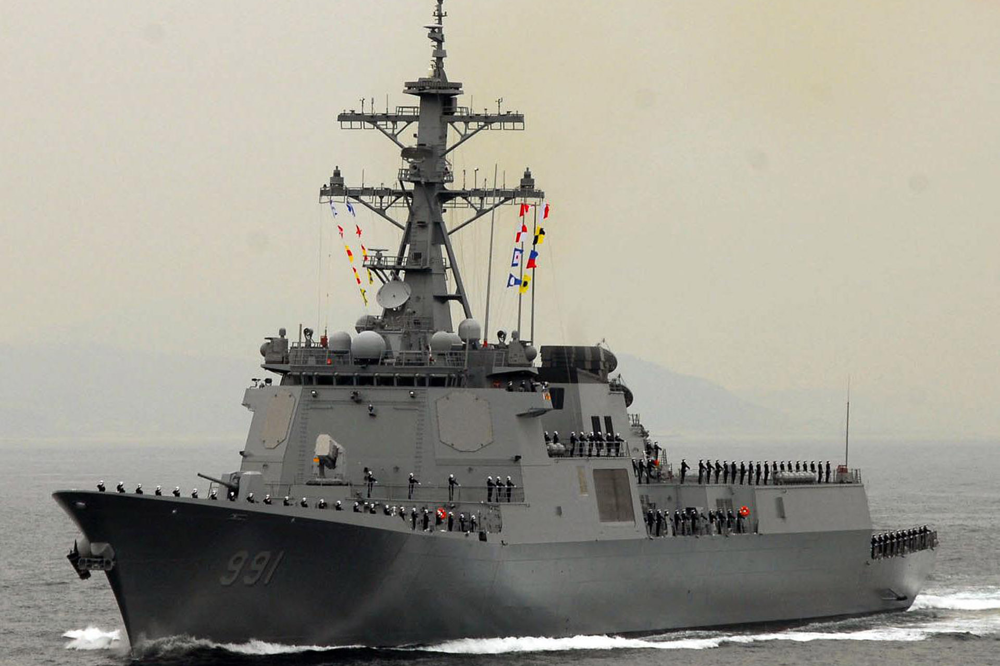 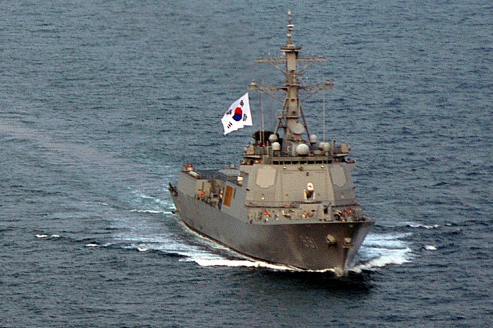 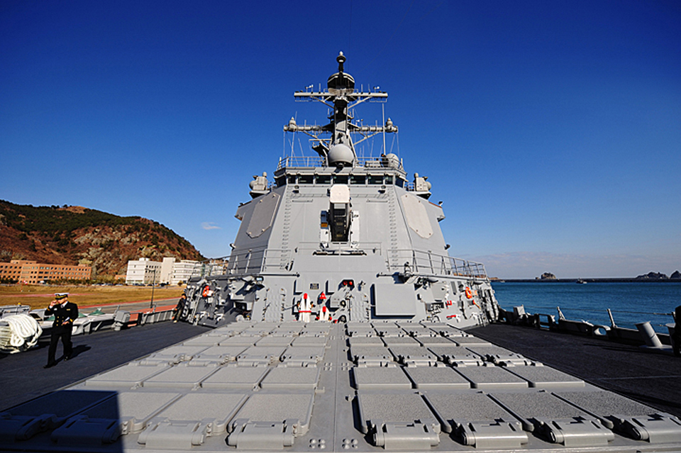 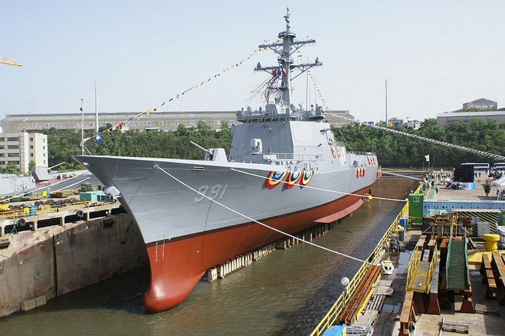 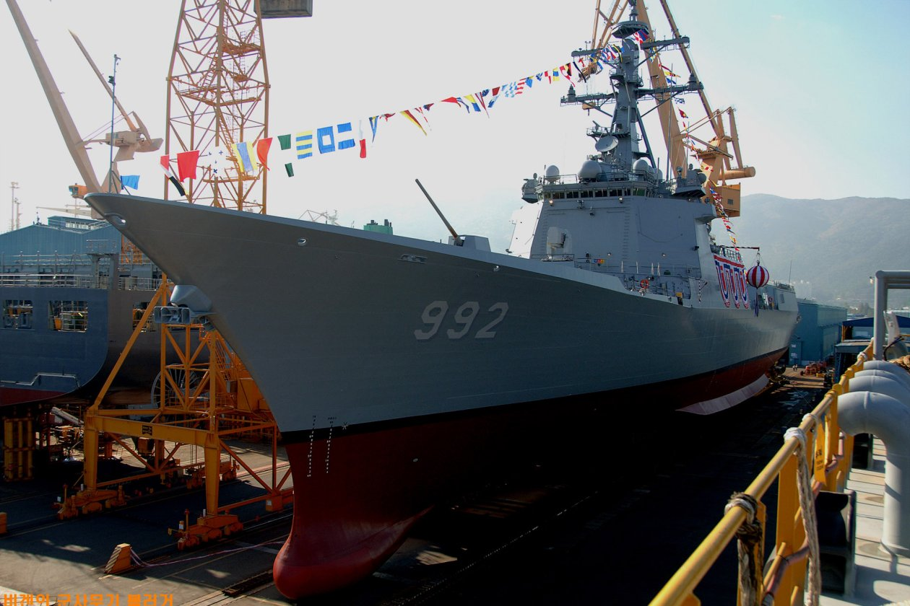 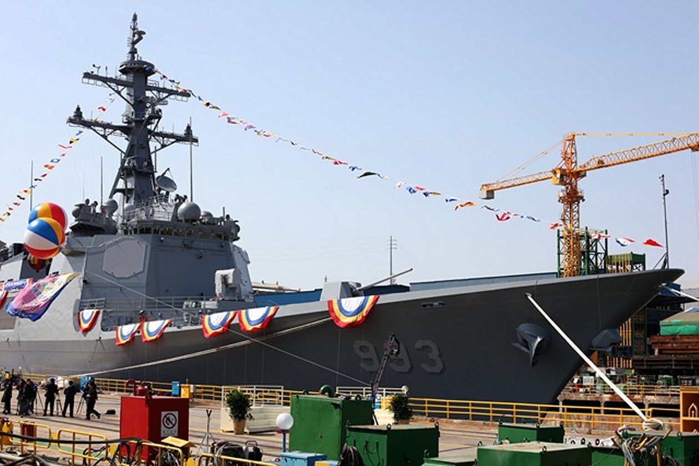 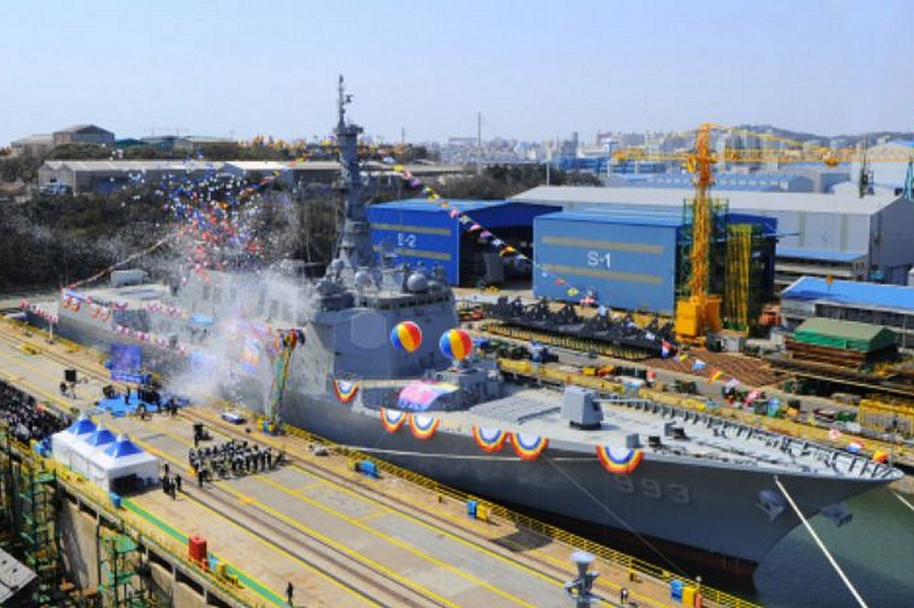 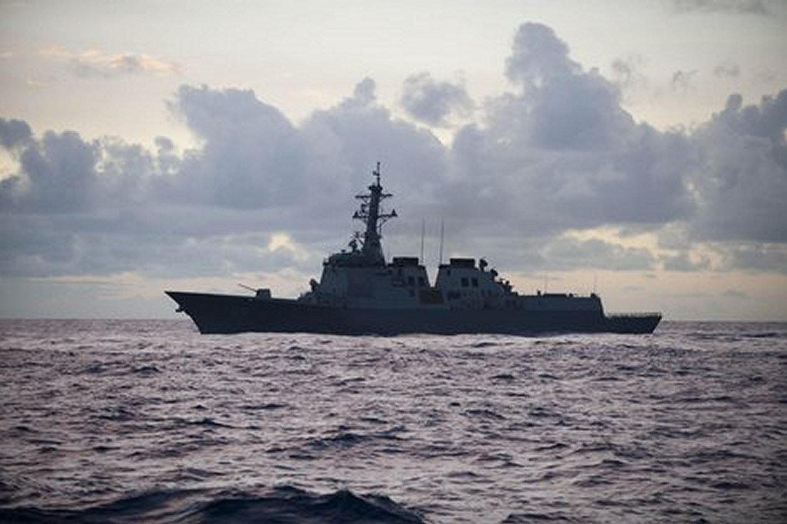 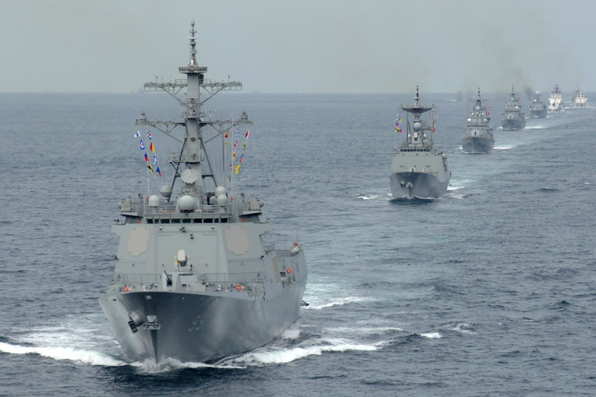 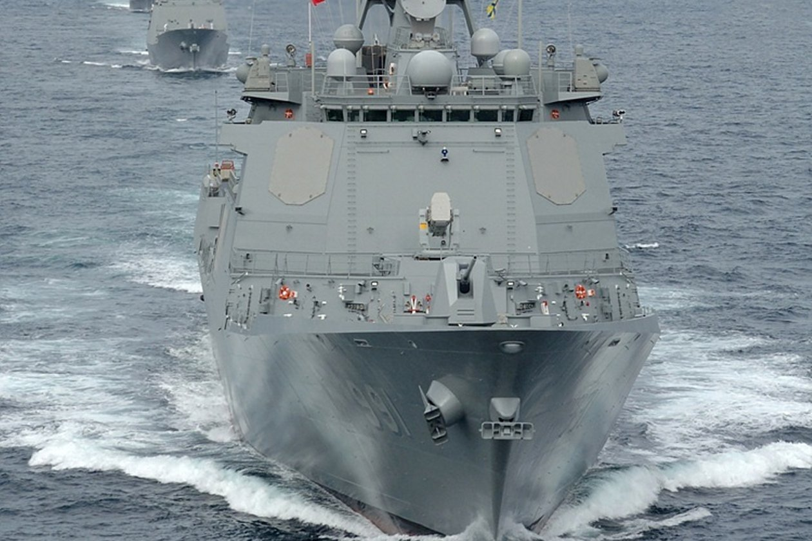 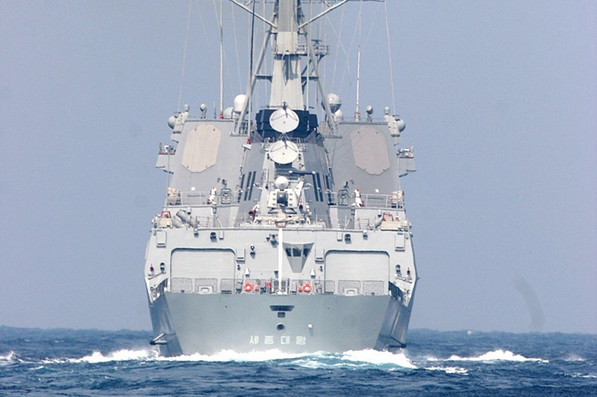 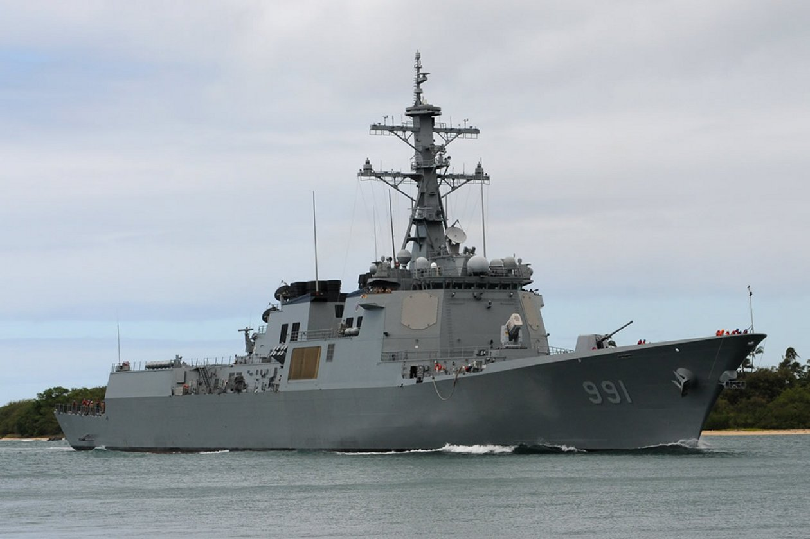 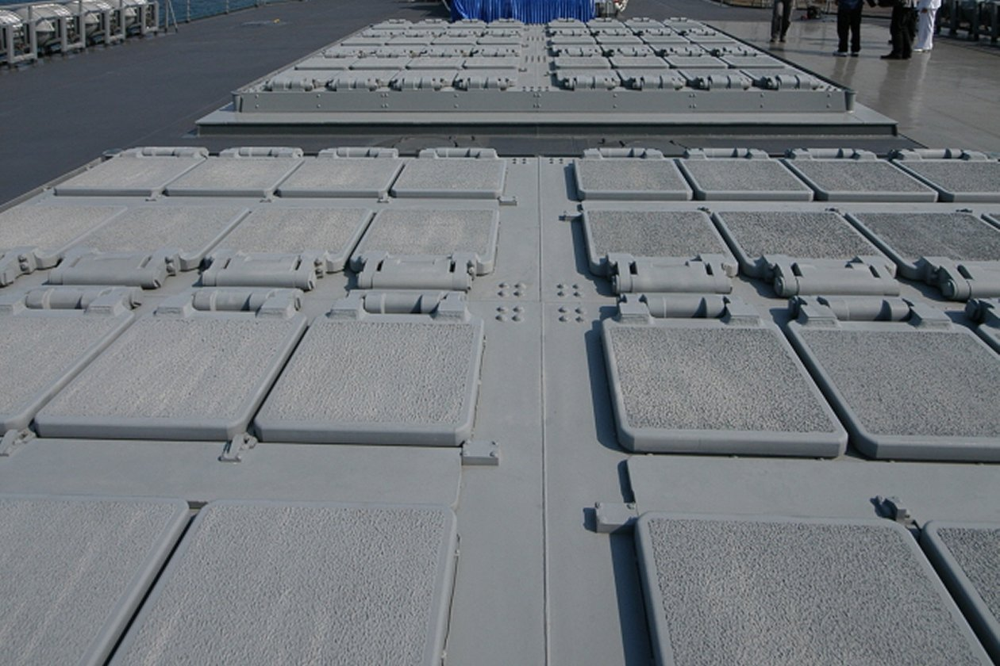   
|


|
Jeff Head is a member of the US Naval Insitute who has many years experience in the power, defense, and computer industries. He currently works for the federal government helping maintain regional infrastructure. He is the author of a self-published military techno-thriller called, "Dragon's Fury," that projects a fictional third world war arising out of current events. Learn more about that series by clicking on the picture of the novel cover below:
 DRAGON'S FURY-World War against America and the West |
JEFFHEAD.COM Hit Counter

Jeff Head's Naval Sites Hit Counter